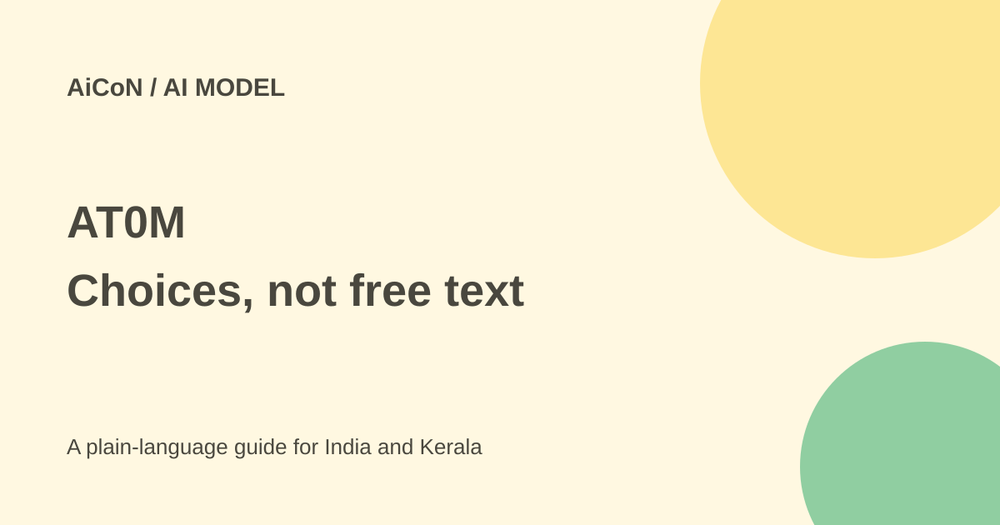

AT0M: bounded AI decisions, local release still pending
AT0M scores options you supply instead of writing free-form text. Its promised local executable is still labelled "to be released"; the currently described trial is a hosted evaluation endpoint.

What makes AT0M different?
Pienomial presents AT0M as a small, non-generative decision model. You provide a state and questions with defined options, such as a choice, a score or a yes/no result. It returns a probability for each option in a single pass. It does not generate an open-ended paragraph.
That removes one output-format problem: it cannot invent an answer outside the supplied candidate set. It does not mean the selected option is correct. A poorly defined option list, ambiguous record or unfamiliar input can still produce a wrong business decision.
Available now versus planned
The site describes v0 as a hosted evaluation build. A developer can use its documented endpoint to test the published claims. It separately labels v1, the self-contained Rust executable, as "to be released". Examples of local commands show the intended release shape, not a download verified as available today.
The planned binary is described for CPU, Apple Metal or CUDA, with HTTP, command-line and file modes. Those deployment claims belong to the future local product. If you send a record to the present hosted evaluation endpoint, that record is not staying solely on your own computer.
Free or paid?
The website says commercial terms will be released with v1. The sources checked do not establish a production price, a permissive open-source licence or unrestricted commercial use. Ask for written licensing, support and data terms before a business trial.
"No output tokens" and "no per-decision network call" describe the intended local inference design. They do not mean hardware, electricity, licences or engineering work have no cost. A hosted evaluation offer is not a complete free production service.
How strong are the benchmark claims?
Pienomial reports 78.9% over 2,000 typed decisions and a 16-millisecond response on a T4 GPU. It also gives calibration and other test results. These are vendor-measured figures on the evaluation build. The page explicitly says competitor tests use different conditions and its typed-decision labels are noisy. Do not read the table as one controlled, hardware-normalised comparison.
The site also reports weaker calibration on unfamiliar phishing data and says some field-versus-field comparisons should be computed in ordinary code. A probability is not a certainty. Choosing a human-review threshold needs a test on your own data and the real cost of a mistake.
How to evaluate it responsibly
- Define one low-risk decision and a complete, clearly worded option list.
- Use synthetic or non-sensitive sample records when testing the hosted endpoint.
- Read the current API schema and verify the output format with ordinary validation code.
- Compare results against known labels, including unfamiliar cases and records that should be escalated.
- Measure errors by their business cost, not overall accuracy alone. Route uncertain or consequential cases to a person.
- Before any production use, confirm the executable's release status, licence, hardware needs, updates and data terms.
- Keep permissions separate from probabilities. A confident result should not automatically authorise a payment or message.
For Indian businesses
A team could study routine ticket routing or a bounded classification task. It should not jump from a fast vendor example to automatic loan, hiring, medical or financial decisions. Check local language performance, bias and records with missing fields.
The local design may interest organisations that cannot send data outside their systems. That benefit is not established for the current hosted v0 trial. Do not upload private customer files merely to prove the model is "private".
What changed since the original post?
The 1 October post already warned that only hosted v0 evaluation was described and v1 pricing was not announced. The current site retains those labels. This guide makes the present-versus-future split clearer and adds the vendor's own benchmark-comparison and off-distribution cautions.
Frequently asked questions
Can it write an email?
No. It scores predefined answers rather than writing free-form text.
Is the local executable available?
The current page still labels v1 "to be released".
Are probabilities always accurate?
No. Test calibration on your own data and retain human review.
Was the endpoint tested here?
No. This is a guide to the current public product claims, not an independent benchmark.
Sources: Official AT0M page. Checked 7 October 2026.